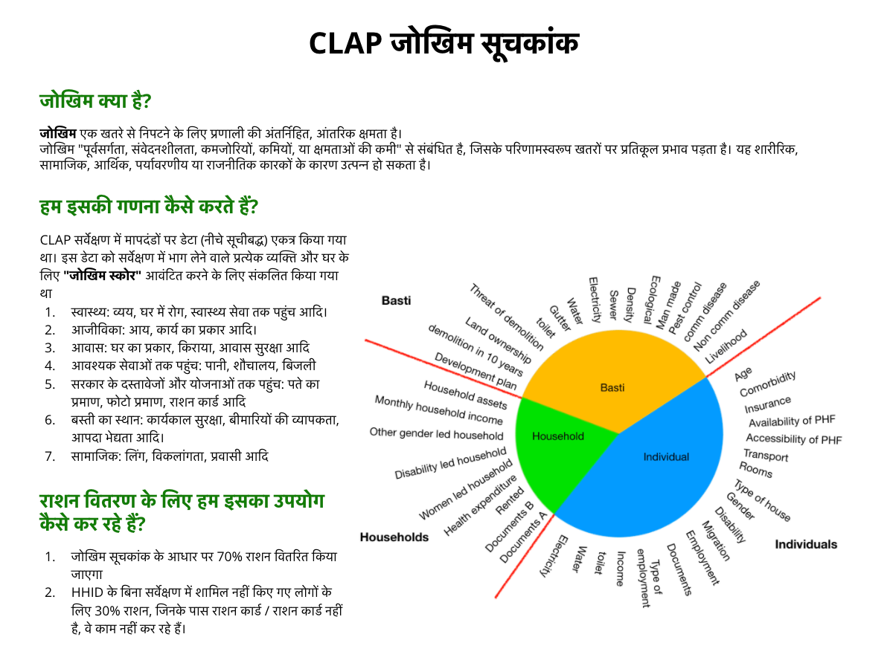
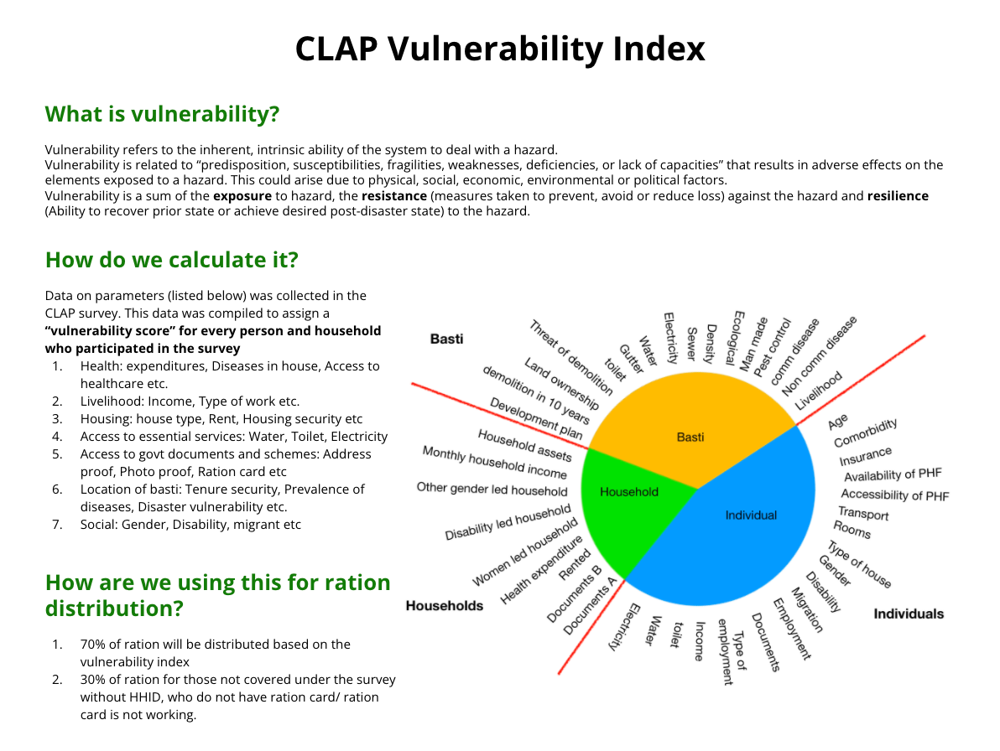

| Component | Description | Download |
|---|---|---|
| Slides on vulnerability index | Overview of index construction methods and options | View basti-wise report |
| Basti, HH and individual vulnerability indices | Sheet compiled, sheet for ind, HH and basti | View google sheets wih parameters, weights |
| Code to create vulnerability scores on several parameters | background files needed : ind, hh, basti | Download clap_report.RmD |
| Vulneraility index report | (Report compiled by sanjana and Shubham documenting the index construction and findings | Report on google doc |
| Vulnerability index dashboard | Code to generate basti wise data sebsets and source the RMD reports for all bastis in a loop | Download clap_report_suport.R |
prepared by sanjana

